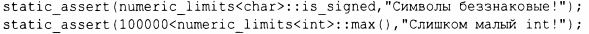

⇐14.6 Векторная арифметика 14.8 Советы⇒
В заголовочном файле <limit> стандартная библиотека предоставляет классы, которые описывают свойства встроенных типов - такие, как максимальный показатель степени для float или количество байтов в int. Например, мы можем проверить во время компиляции, знаковым ли типом является char:
Обратите внимание, что вторая проверка работает только потому, что numeric_limits<int>::max() является соnstехрr-функцией (§1.6).